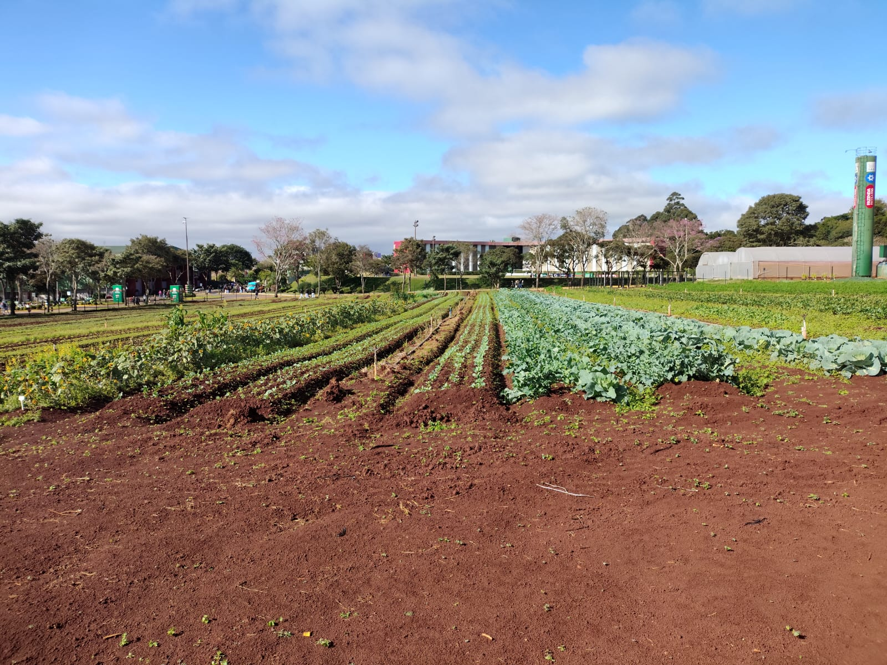

City Farm FAG em Cascavel entra no calendário oficial de eventos do Paraná
A City Farm FAG, evento anual promovido pelo Centro Universitário FAG em Cascavel, foi oficialmente incluída no calendário de eventos do Paraná, por meio de um projeto de lei sancionado pela Assembleia Legislativa. A feira, que celebra a conexão entre o campo e a cidade, destaca inovações no agronegócio e promove a integração entre produtores rurais e a comunidade urbana.
Realizada no Centro de Eventos do campus da FAG, a City Farm combina exposições de tecnologias agrícolas, palestras técnicas e atividades culturais, atraindo milhares de visitantes. Em 2025, o evento contará com a participação do Programa Agrinho, que oferecerá oficinas educativas para estudantes, reforçando o tema “Festejando a conexão campo-cidade” por meio de atividades que promovem sustentabilidade e cidadania.
O deputado Luiz Claudio Romanelli, autor do projeto, destacou a importância da feira: “A City Farm valoriza o agronegócio paranaense e aproxima a população urbana da realidade do campo, promovendo conhecimento e inovação.” A inclusão no calendário oficial garante maior visibilidade e apoio ao evento, consolidando Cascavel como um polo de referência no setor agropecuário.